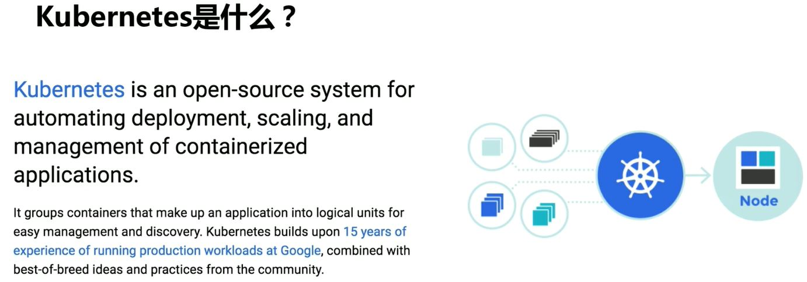
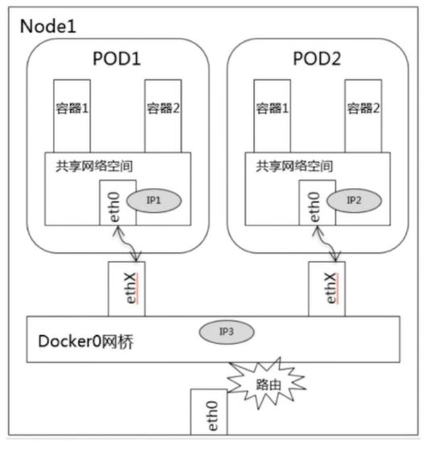

# Kubernetes 简介


# 主要特征
- 以服务为中心：不关心服务运行的环境和细节，所以构建在 kubernetes 上的系统可以部署在物理机、虚拟机、公有云、私有云，在什么地方运行都是无差别的.
- 自动化：在 kubernetes 里的系统可以自动扩缩容、自动升级、更新、部署。比如:
- K8s 收到某个指令后，会触发调度流程，选中目标节点，部署或者停止响应服务.
- 如果有新的 pod 启动，会被自动加入负载均衡器，自动生效
- 服务运行过程中，K8s 会定期的检查它们的实例数，以及这些实例的状态是否正常，当发现某个实例不可用的时候会自动销毁不可用的实例然后重新调度一个新的实例，以上所有都是自动化完成，不需要人工参与.
# 架构

# Kubernetes VS Docker
K8s 可以看成是 Docker 的上层架构，就像是 javaee 和 java 的关系，Java 是一问语言，J2EE 是 Java 语言的一门使用技术，Java 为 J2EE 提供了库和语法，J2EE 使用 Java 的库和语法应用在 WEB 上。这是概念性的区别。
- Java SE（Java Platform，Standard Edition）。Java SE 以前称为 J2SE。它允许开发和部署在桌面、服务器、嵌入式环境和实时环境中使用的 Java 应用程序。Java SE 包含了支持 Java Web 服务开发的类，并为 Java Platform，Enterprise Edition（Java EE）提供基础。
- Java EE（Java Platform，Enterprise Edition）。这个版本以前称为 J2EE。企业版本帮助开发和部署可移植、健壮、可伸缩且安全的服务器端 Java 应用程序。Java EE 是在 Java SE 的基础上构建的，它提供 Web 服务、组件模型、管理和通信 API，可以用来实现企业级的面向服务体系结构（service-oriented architecture，SOA）和 Web 2.0 应用程序。
- Java ME（Java Platform，Micro Edition）。这个版本以前称为 J2ME。Java ME 为在移动设备和嵌入式设备（比如手机、PDA、电视机顶盒和打印机）上运行的应用程序提供一个健壮且灵活的环境。Java ME 包括灵活的用户界面、健壮的安全模型、许多内置的网络协议以及对可以动态下载的连网和离线应用程序的丰富支持。基于 Java ME 规范的应用程序只需编写一次，就可以用于许多设备，而且可以利用每个设备的本机功能。
K8s 是以 Docker 技术的标准为基础去打造一个全新的分布式架构系统，K8s 不是一定要依赖 Docker，Docker 是一个产品，而 Docker 技术是一些列的标准，只要实现了这些标准的产品都可以替代 Docker，所以说 K8s 在底层可以支持它自己的容器技术并且经过 Google 的持续优化，号称在某些方面做得比 Docker 更加优秀，所以用不用 Docker 可以自己选择.
# 核心概念


# Label 标签
POD，Deployment，Node 等都可以打标签启到标识作用.
# POD (可以称为实例)
- 所有的服务，所有的应用最终都是跑在 Pod 中，Pod 是 Kubernetes 概念中最小的单元，可以理解为是 Kubernetes 的一个原子.
- POD 里面可以有一个或多个容器，
- POD 里面所有的容器都是运行在一台机器上
- POD 里面的容器共享网络，有一个唯一的 IP
- POD 里面都会有一个容器叫做 Pause 容器
- 有特定的 image 镜像比如 pause:v1.0
- 作为根容器，把 POD 里其它的容器都 link 到一起，当我们的业务里面有两个或多个容器关系非常紧密，这时候就可以考虑把它们放到同一个 POD 里
- 负责整个 POD 的健康检查，然后汇报给 K8s

# Pod 通讯
Pod 内容器之间通讯：通过 localhost 加上端口就可以访问.

同一个 Node 上不同 Pod 之间的通讯：同一个 Node 上的 Pod，它们默认的路由都是 Docker0，都关联在同一个 Docker0 网桥，地址网段是相同的，它们之间可以直接通过网桥进行通讯，访问方式是可以通过 Pod IP 直接进行访问.
不同 Node 不同 Pod 直接通讯: Pod 的 IP 不能冲突，Pod 的 IP 和 Node 的 IP 关联起来，通过关联让 Pod 之间可以通讯.


# Service
Pod 具体运行在某个 Node 上
Service 在 Pod 外再包一层 IP
当某个 Pod 提供服务出现问题，会在其它地方再启动一个 Pod 和新的 Pod 的 IP，我们还可以通过 Service IP 找到新的 Pod
上面 2 台 Node，3 个 Pod 可以看做同一个应用的多个副本，对一个应用进行扩容，从一个实例扩成三个实例对外提供相同服务
Service 除了上面可以定位到 Pod 地址外还可以对 Pod 地址进行负载均衡，比如轮训访问每个 Pod
Pod 也不一定是一模一样的，也可以是同一个应用的不同版本
通过什么方式来确定哪些 Pod 是一个 Service? 怎么定位哪个 Pod 或哪几个 Pod 属于某个 Service?
Kubernetes 使用的是 Laber Selector
通过配置好的 Service 的 Select ()，选择标签然后自动寻找 POD, Service 对外有一个 ClusterIP (Kube-proxy)，其它服务或者 Client 客户端就可以通过 ClusterIP 访问到这个 Service，进而访问到最底层的 POD 服务
# ReplicaSet (RS) 副本集 (副本集这一层运行的程序可以称为应用)
RS 是 POD 的上一层，管理关联 POD，如果应用运行过程中某个 POD 出现了异常或异常退出，RS 就会保证副本始终为 R，会在另一台机器重新调度一个 POD
# Deployment
扩容：如对一个应用 (Pod) 扩容，把 1 个 Pod 扩容成四个实例，扩容的是 Pod 而不是 Service, 4 个 Pod 拥有相同标签，ServiceIP 不变并对这 4 个 Pod 实行负载均衡

滚动更新：一个旧的应用 (RS 这一层) 运行了两个实例 (两个 POD), 更新这个应用的时候，Deployment 会自动帮我们创建一个 RS，并且滚动的先启动一个新版本的不改变服务的 POD, 修改的可能是 image (login-image:V1->V2), 这时候 Deployment 管理的是三个实例 (3 个 POD)，新的 POD 启动完成，健康检查结束，会停掉原来的 POD 并删掉，然后 RS 会再新建一个与另一个旧版本提供相同服务的 POD，然后停掉另外一个旧版本 POD，旧版 POD 停掉之后 Deployment 会清理掉管理旧版本的 RS, 服务更新完成.


# 架构设计


# 密码学原理
对称加密:

非对称加密:


# 服务之间通信加密:

非对称加密非常复杂，不管是加密还是解密都非常耗时， 如果每次通信都进行非对称加密性能损耗是无法接受的
对称加密性能非常高，因此考虑把两者结合在一起来通信
- Server B 公开了自己的公钥 pub_key, 任何人都可以看到
- 第一次通信，Server A 用 Server B 的 pub_key 加密自己的秘钥，把秘钥变成密文，然后发到 Server B，除了 Server B 可以用自己的私钥解密看到是对称加密的秘钥，中间黑客因为没有 Server B 的私钥因此无法解密，Server B 就知道要跟 Server A 进行对称加密的通信，并且使用的就是这个秘钥
- 之后通信，Server A 就可以用发送给 Server B 的秘钥对要发送的信息使用对称加密算法进行加密变成密文，然后发送给 Server B， Server B 收到信息后再用第一次拿到的秘钥进行对称加密算法解密.
- 上面的就是 SSL/TLS 协议， https 底层就是通过这两个协议进行通信.
- 上面有个不完美地方，Server B 公开 pub_key， 黑客截获后再把黑客自己 Server 的 pub_key 发送给 Server A, Server A 拿着这个 pub_key 加密了自己的私钥，之后又被黑客截获并解密，虽然这些工作对黑客来说很复杂，但这种情况是有可能发生的.
- 解决方法: CA 证书认证机构，一个中间商，给所有 Server 颁发证书，所有正常网站的证书都在这一个地方存储，当 Server A 拿到 pub_key 之后会向 CA 查询这个公钥是不是合法的是不是可以信任的，CA 会查自己的数据库这个 pub_key 是哪个公司的，它的域名是什么，包括所有人是谁等各种信息在 CA 都有备案，CA 告诉 Server A 这个 pub_key 是我颁发的没有问题，Server A 再拿着这个公钥去通信，有时候我们访问一些网站时候，https 会显示红色警告，这就说明这个网站的证书不是通过 CA 认证过的，一般是自己生成的.
# 服务发现
- Kube-proxy (ClusterIP)： 为 Pod 创建虚拟 IP，只能在集群内部访问，并且是固定的，只要 Service 不删除，这个 IP 是不变的.
- Kube-proxy (NodePort): 在每个 Node 上都启一个线程端口，把服务暴露在节点上，这样就可以让集群外的服务通过 Node IP 和 NodePort 去访问集群内的服务.
- Kube-DNS: Kubernetes 的一个插件，负责集群内部的 DNS 解析，目的是让集群内部的 Pod 之间通过名字去访问
# 环境搭建一篇 blog
- 官方推荐使用 Kubeadmin 进行方便快捷的搭建.
- 网上找的个人搭建的 Kubernetes, 在绿色网络环境下安装 kubernetes 集群，并在安装过程中加深对 Kubernetes 组件以及架构的理解.
- https://github.com/liuyi01/kubernetes-starter
# Download & Install
kubernetes 集群部署三种方式
kubeadm 也是一个工具，提供 kubeadm init 和 kubeadm join，用于快速部署 kubernetes 集群，官网步骤参考:
https://kubernetes.io/docs/tasks/tools/install-kubectl/
https://kubernetes.io/docs/setup/production-environment/tools/kubeadm/install-kubeadm/
从官方下载发行版的二进制包，手动部署每个组件，组成 kubernetes 集群
地址：https://github.com/kubernetes/kubernetes/releases
https://github.com/kubernetes/kubernetes/releases?after=v1.13.1
minikube 是一个工具，可以在本地快速运行一个单点的 kubernetes，仅用于尝试 K8S 或日常开发的测试环境使用
部署地址：https://kubernetes.io/docs/setup/minkube/
这里我们使用kubeadm安装的方式搭建 kubernetes
搭建 K8s 集群只用了一台安装 Ubuntu18.04 的酷睿机器.
- Ubuntu18.04 宿主主机上 download & install virtualbox
$ apt-get install virtualbox |
- 下载 Ubuntu18.04 镜像: http://releases.ubuntu.com/18.04/ 选择 ubuntu-18.04.4-live-server-amd64.iso 2020-02-03 18:36 870M Server install image for 64-bit PC (AMD64) computers (standard download)
- 用 virtualbox 安装两台 Ubuntu18.04 虚拟机
- 虚拟机 server01 作为 master;
- 虚拟机 server02 作为 worker01;
- 宿主主机 作为 worker02
每台虚拟机 内存要大于等于 2 G ，CPU 核数需要大于等于 4 核
# 每个 node 都在 /etc/environment 添加如下信息
http_proxy="http://child-prc.intel.com:913/" | |
https_proxy="http://child-prc.intel.com:913/" | |
ftp_proxy="ftp://child-prc.intel.com:913/" | |
no_proxy="K8S_MASTER_IP,K8S_MASTER_HostName" 如: no_proxy="10.67.108.200,hci-node01" | |
NO_PROXY=$no_proxy | |
HTTP_PROXY=$http_proxy | |
HTTPS_PROXY=$https_proxy | |
source /etc/environment |
# 安装 docker
# 删除旧版本 docker
# 步骤 1: | |
rpm -qa | grep docker – – 列出包含docker字段的软件的信息 | |
docker-ce-cli-19.03.12-3.el7.x86_64 | |
yum remove docker-ce-cli-19.03.12-3.el7.x86_64 | |
# (optional) 步骤 2: | |
yum remove -y docker \ | |
docker-client \ | |
docker-client-latest \ | |
docker-common \ | |
docker-latest \ | |
docker-latest-logrotate \ | |
docker-logrotate \ | |
docker-selinux \ | |
docker-engine-selinux \ | |
docker-engine |
# 配置 docker 源
sudo yum install -y yum-utils device-mapper-persistent-data lvm2 | |
sudo yum-config-manager --add-repo https://download.docker.com/linux/centos/docker-ce.repo |
# yum 查看 docker 可用版本
yum list docker-ce --showduplicates | sort -r | |
yum list docker-ce-cli --showduplicates | sort -r | |
yum list containerd.io --showduplicates | sort -r |
# 开始安装 docker
# 安装最新版 docker | |
yum install docker-ce docker-ce-cli containerd.io | |
# 安装指定版 docker | |
yum install docker-ce-19.03.14-3.el7 docker-ce-cli-19.03.14-3.el7 containerd.io-1.3.9-3.1.el7 |
curl -fsSL https://get.docker.com -o get-docker.sh | |
sh get-docker.sh |
# 启动 docker
systemctl daemon-reload | |
systemctl start docker | |
systemctl enable docker |
# docker 的 proxy
NOTE:
如果在系统的 ** /etc/environment ** 中添加 proxy, 则 k8s 安装过程 api-server 等组件会先读取 /etc/environment 文件中的 proxy 信息.
cat /etc/environment
http_proxy="http://child-prc.intel.com:913"
https_proxy="http://child-prc.intel.com:913"
no_proxy="10.67.108.211,10.67.109.142,10.67.109.147,10.67.109.144,10.67.108.220,127.0.0.1,hce-node01,hce-node02,hce-node03,hce-node04"
NO_PROXY=$no_proxy
HTTP_PROXY=$http_proxy
HTTPS_PROXY=$https_proxy
source /etc/environment
mkdir /etc/systemd/system/docker.service.d | |
touch /etc/systemd/system/docker.service.d | |
# Add proxy in this newly created file | |
vim /etc/systemd/system/docker.service.d/proxy.conf | |
[Service] | |
Environment="HTTP_PROXY=http://child-prc.intel.com:913" | |
Environment="HTTPS_PROXY=http://child-prc.intel.com:913" | |
Environment="NO_PROXY=10.67.108.211,10.67.109.142,10.67.109.147,10.67.109.144,10.67.108.220,127.0.0.1,hce-node01,hce-node02,hce-node03,hce-node04" |
mkdir /etc/systemd/system/docker.service.d | |
vim /etc/systemd/system/docker.service.d/http-proxy.conf | |
[Service] | |
Environment="HTTP_PROXY=http://child-prc.intel.com:913/" | |
vim /etc/systemd/system/docker.service.d/https-proxy.conf | |
[Service] | |
Environment="HTTPS_PROXY=http://child-prc.intel.com:913/" | |
vim /etc/systemd/system/docker.service.d/no-proxy.conf | |
[Service] | |
Environment="NO_PROXY=10.239.140.133,10.239.141.123,master-node,node-1" |
之后再次加载 os 系统配置项然后重启 docker
systemctl daemon-reload | |
systemctl start docker |
# docker daemon
vim /etc/docker/daemon.json | |
{ | |
"insecure-registries" :["hce-node01:5000"], | |
"registry-mirrors": ["http://hub-mirror.c.163.com", "https://registry.docker-cn.com"], // 或者"registry-mirrors": ["https://uxk0ognt.mirror.aliyuncs.com"] | |
"live-restore": true, | |
"data-root": "/home/zhan/docker/data" | |
} | |
# 重新加载 docker daemon, 以后每次修改 docker 的 daemon.json 后可以只执行下面的 reload 操作就可以了 | |
systemctl reload docker | |
# 下面方法会重启 doker 运行时. | |
systemctl daemon-reload | |
systemctl restart docker |
"data-root", 最好设置下，否则 docker 下载的 image 和 image 运行时的容器 layer 挂在在系统上的目录是在 /var/lib/docker/..., 而此目录数据默认是存储在根 “/” 目录下，我们装系统默认给根目录分区是 50G 大小，根目录快用完时，会发现系统上有些 docker 容器被默认退出，下载的 image 也被删除.
# 镜像源
可以同事添加多个镜像源，如上所示
Docker 官方中国区：
https://registry.docker-cn.com
网易：
http://hub-mirror.c.163.com
中国科技大学：
https://docker.mirrors.ustc.edu.cn
阿里云：
https://pee6w651.mirror.aliyuncs.com
每台机器都安装 kubeadm (二进制文件工具), kubelet (服务), master 上安装 kubectl (二进制文件工具), 也可以在需要 kubectl 控制 k8s 资源的 worknode 上也安装 (也就是下载或拷贝) kubectl 二进制文件工具.
# 卸载旧版 K8S
kubectl delete node --all | |
for service in kube-apiserver kube-controller-manager kubectl kubelet kube-proxy kube-scheduler; do | |
systemctl stop $service | |
done | |
yum -y remove kubeadm kubectl kubelet |
# 安装新版 kubernetes
Reference Link: https://kubernetes.io/docs/setup/production-environment/tools/kubeadm/install-kubeadm/
reference: https://kubernetes.io/docs/setup/production-environment/tools/kubeadm/install-kubeadm/
# 关闭交换区 | |
swapoff -a | |
# 永久关闭，注释掉带有 swap 的那一行 | |
vim /etc/fstab | |
# 查看防火墙状态 | |
sudo ufw status | |
Status: inactive | |
# 开启防火墙 | |
sudo ufw enable | |
# 关闭防火墙 | |
sudo ufw disable | |
# 如果在公司，配置公司 proxy | |
export http_proxy=http://<Proxy>:port | |
export https_proxy=http://<Proxy>:port | |
# 安装 k8s 包 | |
sudo apt-get update | |
sudo apt-get install -y apt-transport-https ca-certificates curl | |
curl -fsSLo /usr/share/keyrings/kubernetes-archive-keyring.gpg https://packages.cloud.google.com/apt/doc/apt-key.gpg | |
echo "deb [signed-by=/usr/share/keyrings/kubernetes-archive-keyring.gpg] https://apt.kubernetes.io/ kubernetes-xenial main" | sudo tee /etc/apt/sources.list.d/kubernetes.list | |
apt-get update | |
# 查看都有哪些版本 | |
apt-cache madison kubectl | |
apt-cache madison kubectl | |
apt-cache madison kubectl | |
# 安装指定版本的 kubernetes | |
apt-get install -y kubectl=<version> kubelet=<version> kubeadm=<version> | |
apt-get install -y kubectl=1.19.0-00 kubelet=1.19.0-00 kubeadm=1.19.0-00 | |
apt-mark hold kubelet kubeadm kubectl |
The kubelet is now restarting every few seconds, as it waits in a crashloop for kubeadm to tell it what to do.
# 关闭交换区 | |
swapoff -a | |
# Edit /etc/fstab to comment out swap partition line so that it remains disabled after reboot | |
vim /etc/sysctl.d/k8s.conf | |
net.bridge.bridge-nf-call-ip6tables = 1 | |
net.bridge.bridge-nf-call-iptables = 1 | |
sysctl --system | |
# Centos 关闭防火墙 | |
systemctl stop firewalld.service | |
systemctl disable firewalld | |
# Ubuntu 关闭防火墙 | |
sudo apt-get install ufw | |
# inactive 状态是防火墙关闭状态 active 是开启状态 | |
sudo ufw status | |
Status: active | |
# 关闭防火墙 | |
sudo ufw disable | |
# 开启防火墙 | |
sudo ufw enable | |
# Set SELinux in permissive mode (effectively disabling it) | |
setenforce 0 | |
sed -i 's/^SELINUX=enforcing$/SELINUX=permissive/' /etc/selinux/config | |
# 配置 kubernetes 安装源 | |
cat <<EOF > /etc/yum.repos.d/kubernetes.repo | |
[kubernetes] | |
name=Kubernetes | |
baseurl=https://packages.cloud.google.com/yum/repos/kubernetes-el7-x86_64 | |
enabled=1 | |
gpgcheck=1 | |
repo_gpgcheck=1 | |
gpgkey=https://packages.cloud.google.com/yum/doc/yum-key.gpg https://packages.cloud.google.com/yum/doc/rpm-package-key.gpg | |
exclude=kubelet kubeadm kubectl | |
EOF | |
# 查看可安装的 kubeadm 版本 | |
yum list kubelet kubeadm kubectl --showduplicates|sort -r | |
# 安装 kubernetes 组件 | |
yum install -y kubelet kubeadm kubectl --disableexcludes=kubernetes // 禁掉除了这个之外的别的仓库,也就是用这个新加的kubernetes仓库来安装kubeadm等. | |
(特定版本)yum install -y kubectl-1.19.0 kubelet-1.19.0 kubeadm-1.19.0 --disableexcludes=kubernetes | |
systemctl enable --now kubelet | |
kubeadm version // 通过 kubectl 命令行客户端向运行在主节点上的 Kubemetes API 服务器发出 REST 请求以与集群交互 | |
kubectl version // 客户端工具 | |
# kubelet 服务配置文件路径: /var/lib/kubelet/config.yaml | |
$ kubelet --version // kubelet是一个服务，可通过systemctl restart kubelet重启服务，每台master和worker节点都需要安装 | |
$ systemctl enable --now kubelet | |
$ kubeadm reset | |
$ sudo hostnamectl set-hostname master-node //修改机器名字, 重开终端就可以看到机器名变了 |
# k8s 配置自动补全命令
# 安装 bash 自动补全插件 | |
yum install bash-completion -y | |
# 设置 kubectl 与 kubeadm 命令补全，下次 login 生效 | |
kubectl completion bash >/etc/bash_completion.d/kubectl | |
kubeadm completion bash > /etc/bash_completion.d/kubeadm |
# 机器配置
# 环境配置
master-node 和 worknode 都需要设置.
关闭交换区，K8s 认为 swap 性能开销比较大，性能会大幅降低，使用 swap 做云基础架构会减少性能，因此 k8s 关闭 swap.
另外重新装系统 OS 时候就可以不给 swap 分配分区.
swapoff -a // 临时关闭交换区，$ free -h 可以查看 Swap: 0B... | |
vim /etc/fstab // 设置重启后自动关闭swapoff, 将含有swap的那一行前面加"#"注释掉就可以了 | |
/dev/mapper/centos-swap swap swap defaults 0 0 | |
sed -i '/swap/d' /etc/fstab //永久关闭 | |
# 关闭防火墙 | |
systemctl stop firewalld.service | |
systemctl status firewalld.service // 查看防火墙是否有 Active: inactive (dead) since...... | |
systemctl disable firewalld // 设置开机不启动防火墙 | |
sysctl net.bridge.bridge-nf-call-iptables=1 | |
sysctl net.bridge.bridge-nf-call-ip6tables=1 |
有的说明还可以关闭网络管理器，关闭核心防护，清空 iptabels, 编辑主机名
// systemctl list-unit-files --type=service | grep NetworkManager // 查看NetworkManager是否enabled | |
// systemctl status NetworkManager // 查看NetworkManager是否running | |
// systemctl stop NetworkManager // 关闭网络, 没有IP地址无法远程连接终端, 慎用. | |
// systemctl disable NetworkManager | |
setenforce 0 | |
sed -i 's/^SELINUX=.*/SELINUX=disabled/' /etc/selinux/config | |
# 清理 iptables 规则 | |
yum install ipvsadm -y # apt-get install ipvsadm -y | |
iptables -F && iptables -t nat -F && iptables -t mangle -F && iptables -X | |
ipvsadm -C | |
ipvsadm --clear |
Iptables 原理
linux 的防火墙由 netfilter 和 iptables 组成
用户空间的 iptables 制定防火墙规则，内核空间的 netfilter 实现防火墙功能 netfilter（内核空间）位于 Linux 内核中的包过滤防火墙功能体系，称为 Linux 防火墙的 “内核态”
iptables (用户空间) 位于 /sbin/iptables，是用来管理防火墙的命令的工具，为防火墙体系提供过滤规则 / 策略，决定如何过滤或处理到达防火墙主机的数据包，称为 Linux 防火墙的 “用户态 "
$ getenforce // 获得当前 SELinux 的模式。
- －enforcing 强制模式：SELinux 被启动，并强制执行所有的安全策略规则。
- －permissive 宽容模式：SELinux 被启用，但安全策略规则并没有被强制执行。当安全策略规则应该拒绝访问时，访问仍然被允许。然而，此时会向日志文件发送一条消息，表示该访问应该被拒绝。
- －disabled 禁用模式：SELinux 被关闭，默认的 DAC 访问控制方式被使用。对于那些不需要增强安全性的环境来说，该模式是非常有用的。
$ setenforce // 修改当前 SELinux 的模式
# 关闭 selinux: // 限制访问 linux 资源文件上下文 | |
getenforce // 查看是否disabled | |
setenforce 0 //临时关闭selinux(Security-Enhanced Linux), 终端会输出"setenforce: SELinux is disabled" | |
vim /etc/selinux/config --> 将 SELINUX=permissive 改为 SELINUX=disabled, 设置重启后自动关闭selinux | |
sed -i 's/^SELINUX=enforcing$/SELINUX=permissive/' /etc/selinux/config //永久关闭 | |
sed -i 's/^SELINUX=.*/SELINUX=disabled/' /etc/selinux/config(另一种) |
# 同步系统时间
涉及到验证签发的证书的有效性，如果签发证书的服务器时间比使用证书的服务器时间早，就会导致校验不成功或证书错误，一直等到使用证书的服务器时间也运行到证书开始生效的时间后才会解决这个问题.
# 查看当前系统时间 | |
date | |
Fri Apr 2 09:58:24 EDT 2021 | |
# 查看时区 | |
date -R | |
Fri, 02 Apr 2021 13:40:30 -0400 // 西四区 | |
# 修改系统时区 | |
cp -f /usr/share/zoneinfo/Asia/Shanghai /etc/localtime | |
# 提示是否覆盖，输入 Y 回车 | |
# 再次查看系统时间，CST, China Time Zone | |
date | |
Sat Apr 3 02:05:06 CST 2021 | |
date -R | |
Sat, 03 Apr 2021 02:08:23 +0800 // 东八区 | |
# 修改当前系统时间 | |
date -s “2018-2-22 19:10:30” | |
# 查看硬件时间 | |
hwclock --show | |
# 修改硬件时间 | |
hwclock –set –date “2018-2-22 19:10:30” | |
# 同步硬件时间和系统时间 | |
hwclock –hctosys | |
(optional)# 同步系统时间和硬件时间 | |
(optional)hwclock --systohc | |
# 保存时钟 | |
clock -w | |
重启系统（init 6）后便发现系统时间被修改了 |
- 配置 master 机器
# master-node 安装 | |
yum install chrony -y | |
vim /etc/chrony.conf | |
...... | |
# Please consider joining the pool (http://www.pool.ntp.org/join.html) | |
#server 0.centos.pool.ntp.org iburst // 注释掉或删掉 | |
#server 1.centos.pool.ntp.org iburst // 注释掉或删掉 | |
#server 2.centos.pool.ntp.org iburst // 注释掉或删掉 | |
#server 3.centos.pool.ntp.org iburst // 注释掉或删掉 | |
server 127.127.1.0 iburst //1. 添加master充当server | |
...... | |
# Allow NTP client access from local network | |
allow 10.239.0.0/16 // 2. # allow 192.168.31.0/24 | |
# Serve time even if not synchronized to a time source. | |
local stratum 10 // 3. |
重启 chrony
systemctl start chronyd | |
systemctl restart chronyd | |
systemctl enable chronyd |
查看 chrony 端口，判断服务是否起来
ss -unl | grep 123 | |
UNCONN 0 0 *:123 *:* |
- 配置 node 机器
# work node 安装 | |
yum install chrony -y | |
vim /etc/chrony.conf //只添加一行，指定从master获取时间 | |
# Please consider joining the pool (http://www.pool.ntp.org/join.html). | |
#server 0.centos.pool.ntp.org iburst // 注释 | |
#server 1.centos.pool.ntp.org iburst // 注释 | |
#server 2.centos.pool.ntp.org iburst // 注释 | |
#server 3.centos.pool.ntp.org iburst // 注释 | |
server 10.239.140.133 iburst //添加冲master获取时间 |
重启 chrony 服务，服务重启后就与 master 时间同步了
systemctl start chronyd | |
systemctl restart chronyd | |
systemctl enable chronyd |
work node 上不需要查看端口，因为 node 的 chrony 不需要开启接受请求时间端口，因此可以没有
- work node 上执行执行 chronyc 命令查看与 master 机器时间同步情况
chronyc sources | ||
210 Number of sources = 1 | ||
MS Name/IP address Stratum Poll Reach LastRx Last sample | ||
^* master-node 10 6 77 40 -10us[ -111us] +/- 67us |
^* 表示时间已经同步完成
^? 表示还没有同步完成，需要等一会，如果等一会还不行说明配置出错需要找原因
# 设置系统时区为 中国 / 上海 | |
timedatectl set-timezone Asia/Shanghai | |
# 将当前的 UTC 时间写入硬件时钟 | |
timedatectl set-local-rtc 0 | |
# 重启依赖于系统时间的服务 | |
systemctl restart rsyslog | |
systemctl restart crond |
ntpdate time.windows.com // 同步 windows 系统时间 |
# 安装镜像 (可跳过)
kubeadm config images list // 查看kubeadm 下载过的images | |
docker images | |
docker pull gcr.io/google_containers/kube-apiserver-amd64:v1.9.3 | |
docker pull gcr.io/google_containers/kube-controller-manager-amd64:v1.9.3 | |
docker pull gcr.io/google_containers/kube-scheduler-amd64:v1.9.3 |
# 添加机器到 K8s 集群
- 在 Master 主机 server01 上运行
kubeadm init |
返回部分数据如下
......
Then you can join any number of worker nodes by running the following on each as root:
kubeadm join 10.239.141.112:6443 --token uvm0zr.ndg144wcga276j16 \
--discovery-token-ca-cert-hash sha256:e1535452b32ed4039fa2f261197c0b91179fb168e8da3dd58b99fc11fe2213b8
root@server01:~#
添加 kubeadm 部署 k8s 后生成的 administrator 访问证书到环境变量或～/.kube 目录，使得 root 或其它 user 登陆后可以通过 kubectl 访问或生成 k8s 资源如 pod 等，有如下两种方式.
export KUBECONFIG=/etc/kubernetes/admin.conf | |
echo "export KUBECONFIG=/etc/kubernetes/admin.conf" | tee -a ~/.bashrc | |
source ~/.bashrc |
(其它 user 而非 root 登陆后需要做如下操作才能通过 kubectl 访问或生成 k8s 资源如 pod 等):
mkdir -p $HOME/.kube | |
sudo cp -i /etc/kubernetes/admin.conf $HOME/.kube/config | |
sudo chown $(id -u):$(id -g) $HOME/.kube/config |
添加容器之间的通信网络，第三方资源 weave, 官网上也推荐部署其它几种通信网络方式
kubectl apply -f https://cloud.weave.works/k8s/net?k8s-version=$(kubectl version | base64 | tr -d '\n') |
- 之后用上面命令返回的 kubeadm join 10.239.141.112:6443 --t ... 复制 并 在其它 node 机器 (server02 和宿主主机) 上运行就可以把 node 加进上面创建的 Cluster 了
# 在 master server01 机器上查看集群节点信息
kubectl get nodes | |
kubectl get namespaces |
# 查看 node 节点信息
kubectl describe node server02 |
# 重新 (reset) 在原来机器上搭建 k8s 集群操作
主机名和 IP 解析，通过主机名访问机器，修改下各个节点 /etc/hosts 文件内容 (实验环境没有修改，跳过这个步骤), 也可以只在 master 上配置，因为很多操作都是在 master 上执行
......
10.239.141.106 server01
10.239.140.184 server02
10.239.140.186 alpha
1. 需要在 master 节点上执行
# reset k8s 集群 | |
rm -rf /etc/kubernetes/pki/etcd/ | |
rm -rf /var/lib/etcd | |
rm -rf $HOME/.kube | |
kubeadm reset // 出现有什么没有清理干净的可以手动删除掉, 如cni等,再reset, 如果还出现,可以忽略掉没有清理干净的信息提示, 执行kubeadm init. | |
# 清理 iptables 规则 | |
(optional)yum install ipvsadm -y # apt-get install ipvsadm -y | |
iptables -F && iptables -t nat -F && iptables -t mangle -F && iptables -X | |
ipvsadm -C | |
ipvsadm --clear | |
# 再次设置环境 | |
systemctl stop kubelet | |
systemctl restart kubelet | |
systemctl daemon-reload | |
systemctl stop docker | |
systemctl restart docker | |
swapoff -a | |
# Edit /etc/fstab to comment out swap partition line so that it remains disabled after reboot | |
setenforce 0 | |
systemctl stop firewalld.service | |
systemctl disable firewalld | |
sysctl net.bridge.bridge-nf-call-iptables=1 | |
sysctl net.bridge.bridge-nf-call-ip6tables = 1 | |
vim /etc/sysctl.d/k8s.conf | |
net.bridge.bridge-nf-call-ip6tables = 1 | |
net.bridge.bridge-nf-call-iptables = 1 | |
sysctl --system | |
kubeadm init //再用返回的 "kubeadm join..." 在其它节点执行 | |
echo "export KUBECONFIG=/etc/kubernetes/admin.conf" | tee -a ~/.bashrc | |
source ~/.bashrc |
2. 在 worker 节点执行:
检查 /etc/systemd/system/kubelet.service.d/20-etcd-service-manager.conf 有没有残留的 kubelet 服务配置文件，有的话删掉.
environment_initialization.sh
systemctl enable docker.service | |
kubeadm reset | |
# 清理 iptables 规则 | |
(optional)yum install ipvsadm -y # apt-get install ipvsadm -y | |
iptables -F && iptables -t nat -F && iptables -t mangle -F && iptables -X | |
ipvsadm -C | |
ipvsadm --clear | |
systemctl stop kubelet | |
systemctl stop docker | |
systemctl restart kubelet | |
systemctl restart docker | |
swapoff -a | |
setenforce 0 | |
systemctl stop firewalld.service | |
sysctl net.bridge.bridge-nf-call-iptables=1 | |
systemctl daemon-reload |
加入集群
iptables -F && iptables -t nat -F && iptables -t mangle -F && iptables -X // will reset iptables | |
kubeadm join ...... |
3. 再次在 master 节点上执行
如果不执行下面命令安装 weave pod, kube-system 命名空间下的 coredns 会一直处于 containercreating 状态.
kubectl apply -f https://cloud.weave.works/k8s/net?k8s-version=$(kubectl version | base64 | tr -d '\n') | |
kubectl get cs |
# k8s 重新生成 token
主机上执行如下命令，主机 IP:10.239.140.186
kubeadm token create | |
v6rgnu.ydqgkuujayykkanv | |
kubeadm token list | |
TOKEN TTL EXPIRES USAGES DESCRIPTION EXTRA GROUPS | |
v6rgnu.ydqgkuujayykkanv 23h 2020-05-30T13:24:41+08:00 authentication,signing <none> system:bootstrappers:kubeadm:default-node-token | |
openssl x509 -pubkey -in /etc/kubernetes/pki/ca.crt | openssl rsa -pubin -outform der 2>/dev/null | openssl dgst -sha256 -hex | sed 's/^.* //' | |
be6606e3e081afc6f9785fbe0e129e048e5a2a5557cb2e7747d727edd20c6ed4 |
用上面 master 主机上生成的 token 在 worker 节点执行如下命令:
kubeadm reset | |
swapoff -a | |
setenforce 0 | |
systemctl stop firewalld.service | |
sysctl net.bridge.bridge-nf-call-iptables=1 | |
sysctl net.bridge.bridge-nf-call-ip6tables=1 | |
kubeadm join --token v6rgnu.ydqgkuujayykkanv --discovery-token-ca-cert-hash sha256:be6606e3e081afc6f9785fbe0e129e048e5a2a5557cb2e7747d727edd20c6ed4 10.239.140.186:6443 |
# k8s 命令自动补全
yum install bash-completion | |
echo "source <(kubectl completion bash)" >> ~/.bashrc | |
source ~/.bashrc | |
bash /usr/share/bash-completion/bash_completion | |
bash |
试试 输入 kubectl get n 按 tab 查看提示.
# reset iptables
https://kubernetes.io/docs/setup/production-environment/tools/kubeadm/create-cluster-kubeadm/
#The reset process does not reset or clean up iptables rules or IPVS tables. If you wish to reset iptables, you must do so manually: | |
iptables -F && iptables -t nat -F && iptables -t mangle -F && iptables -X | |
#If you want to reset the IPVS tables, you must run the following command: | |
ipvsadm -C | |
ipvsadm --clear |
# Additional
# 重新 reset K8s 集群，然后 kubeadm init 遇到如下问题
# 问题 1
[kubelet-check] The HTTP call equal to 'curl -sSL http://localhost:10248/healthz' failed with error: Get http://localhost:10248/healthz: dial tcp [::1]:10248: connect: connection refused.
解决方法:
systemctl restart docker | |
rm -rf /etc/systemd/system/kubelet.service.d/* | |
systemctl daemon-reload |
# 问题 2
Unable to connect to the server: x509: certificate signed by unknown authority
需要删除上一次部署后 cp 到～/.kube 的证书文件，再重新部署一遍 k8s 集群
rm -rf $HOME/.kube |
# 问题 3
The connection to the server localhost:8080 was refused - did you specify the right host or port?
需要添加 administrator 访问证书
第一种:
export KUBECONFIG=/etc/kubernetes/admin.conf | |
echo "export KUBECONFIG=/etc/kubernetes/admin.conf" | tee -a ~/.bashrc | |
source ~/.bashrc |
第二种:
mkdir -p $HOME/.kube | |
sudo cp -i /etc/kubernetes/admin.conf $HOME/.kube/config | |
sudo chown $(id -u):$(id -g) $HOME/.kube/config |
# 问题 n
https://istio.io/docs/examples/bookinfo/
Istio 部署 bookinfo 到 bookinfo 命名空间， 发现只部署了 svc，RS，但是没有部署 pod.
kubectl apply -f samples/bookinfo/platform/kube/bookinfo.yaml -n bookinfo |
用以下命令可以查看出错信息，发现是 webhook 相关错误
kubectl describe rs/RS-NAME -n bookinfo |
解决方法是注释掉 kubernetes 的 proxy
vim /etc/kubernetes/manifests/kube-apiserver.yaml | |
env: // K8s安装会用系统的proxy，加#注释掉. | |
#- name: HTTP_PROXY | |
# value: http://child-prc.intel.com:913 | |
#- name: https_proxy | |
# value: http://child-prc.intel.com:913 | |
#- name: http_proxy | |
# value: http://child-prc.intel.com:913 | |
#- name: HTTPS_PROXY | |
# value: http://child-prc.intel.com:913 | |
- name: no_proxy | |
value: 10.239.140.186,10.239.140.200 // master和一个worker节点的NodeIP. |
稍等一会 $ kubectl get po -n bookinfo 就可以看到 pod 慢慢部署成功了.
# 部署网络 weave 出错
Unable to update cni config: No networks found in /etc/cni/net.d
由于设置了代理导致的错误，kubelet 无法通过代理链接到 kube-apiserve
解决办法:
$ unset http_proxy https_proxy | |
# or | |
$ export no_proxy=<your_kube_apiserver_ip> |
# 去掉污点 Taints
# 允许调度 pod | |
kubectl taint node {node name} node-role.kubernetes.io/master- | |
# example | |
kubectl taint node host1 node-role.kubernetes.io/master- | |
# 禁止调度 pod | |
kubectl taint node {node name} node-role.kubernetes.io/master=master | |
# example | |
kubectl taint node host1 node-role.kubernetes.io/master=master | |
# 去掉所有控制平面 host 污点 | |
kubectl taint nodes --all node-role.kubernetes.io/master- |
# 重新生成证书
# 在master机器上执行如下命令
kubeadm token create --print-join-command
W1202 13:34:46.942799 17329 configset.go:348] WARNING: kubeadm cannot validate component configs for API groups [kubelet.config.k8s.io kubeproxy.config.k8s.io]
kubeadm join 10.239.140.201:6443 --token 3vm6e8.wjlspdqpjau62riz --discovery-token-ca-cert-hash sha256:99f1f55a10e439883030b810be5d3d364d12c508765984cc9ab633db6dbfada9
# 再在要加入的node机器上执行如上生成的join命令就可以了.
有时可能过了一段时间需要添加新的 node | |
# 生成一个 token | |
kubeadm token generate | |
# 获取证书的 hash 值 | |
openssl x509 -pubkey -in /etc/kubernetes/pki/ca.crt | openssl rsa -pubin -outform der 2>/dev/null | \ | |
openssl dgst -sha256 -hex | sed 's/^.* //' | |
# kubeadm join --token <token> <master-ip>:<master-port> --discovery-token-ca-cert-hash sha256:<hash> | |
# example | |
kubeadm join --token xf96mj.aq2c5v14r62rf2aw 172.16.50.10:6443 --discovery-token-ca-cert-hash sha256:a18c59189884451f71305a0107d15b79a8ac091ef9a8b9e394cad5d4b9f18162 |